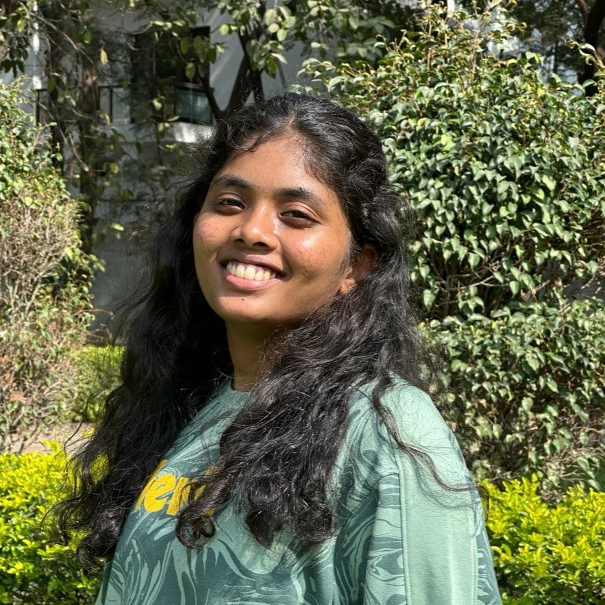

VOGILISHETTY SANJANA

Career Objective
Looking for a promising & challenging career which will enable me to provide the best of my Technical, analytical & professional skills.
Education
- Course: B.Tech
Institute: G. Narayanamma Institute Of
Technology and Science, 2021-25.
CGPA: 9.25(till fifth semester)
-
Course: Intermediate(MPC)
Institute: Pinegrove Junior College, 2019-21.
CGPA: 9.86
-
Course: Secondary (10th)
School: Greenwood High School, 2018-19.
CGPA: 9.32
Technical skills
-
Programming Skills : Basics in C, Python ;Intermediate in Java ,Data Structures through C++.
-
Web Technologies : Basics in HTML, CSS.
-
Database Management: Basics of SQL, PL/SQL.
Volunteer work and certifications:
- Attended Workshop on Ethical Hacking and Cyber Security, 2023.
- Secured 2nd place in Ethical Hacking and Cyber Security Hackathon conducted by Supraja Technologies, 2023.
- Participated in hackathon organized by IGNIUM Club-2k22, GNITS.
- Part of organizing committee at VERVE 2022 ,GNITS .
- Attended Pre-Conference Workshop on "Computer Vision for Virtual and Augmented Reality", 2022.
- Completed the course "Programming Fundamentals Using Python-Part 1 and 2"conducted by Infosys, 2022.
- Received Guinness World Record for the event Maha Brinda Natyam,2016
Projects
-
Smart college gate system
A prototype for an automatic gate is made with an added feature of storing the data of all the vehicles that are entering amd leaving the college.
-
Automatic water dispenser with RFID tag
It’s an ongoing project that helps a person to keep a track on the intake of water.
Others